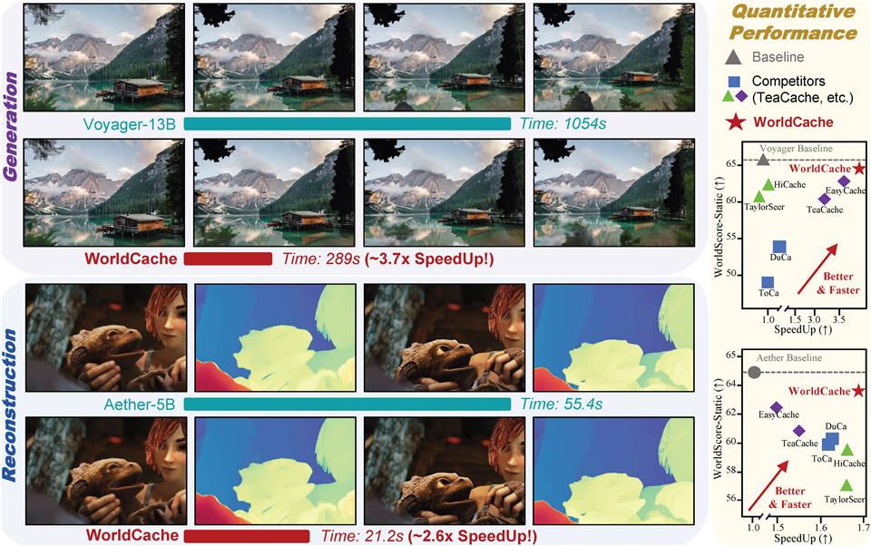

Sep 2026 – Present
Institute of Computing Technology, Chinese Academy of Sciences
Master’s student in Computer Science and Technology
I’m Guoxin Fan (范国鑫), a master’s student at the Institute of Computing Technology, Chinese Academy of Sciences (ICT, CAS). I received my B.E. in Computer Science and Technology from Fuzhou University in 2026.
My research focuses on efficient machine learning. I’m particularly interested in using caching, sparsity, and quantization to accelerate inference in generative models.
* Equal contribution

Institute of Computing Technology, Chinese Academy of Sciences
Master’s student in Computer Science and Technology
Fuzhou University
Bachelor of Engineering in Computer Science and Technology
Reviewer, AAAI Conference on Artificial Intelligence